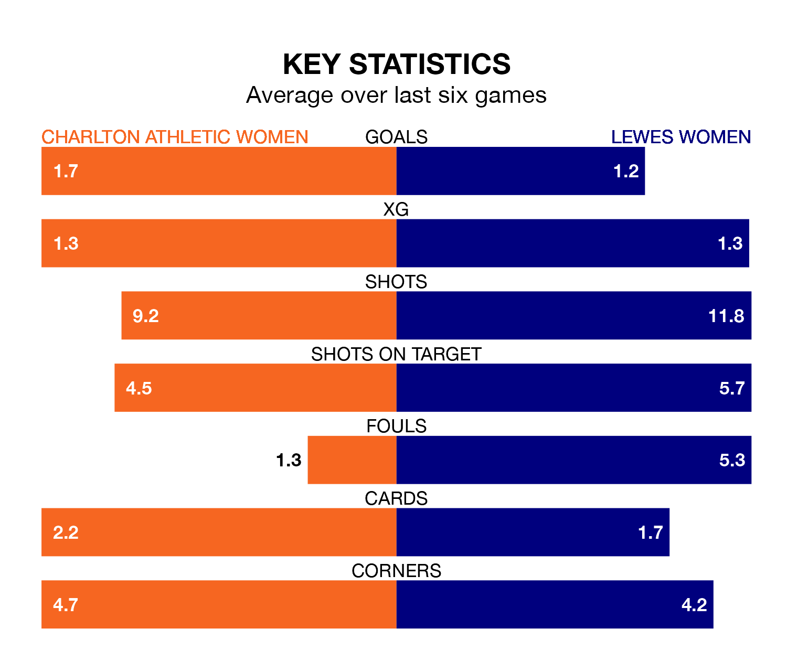

Mid-season relegation candidates Lewes Women face a challenge away against high-flying Charlton Athletic Women at the Oakwood on Sunday.
Lewes Women are 11th in the FA Women's Championship table, and have picked up two wins and three draws in their 13 games to date.
Charlton Athletic, meanwhile, are top of the standings with 29 points, having won eight and drawn five of their first 14 matches.
With 10 goals in 13 games so far this season, Lewes are the league's joint-second-lowest scorers with 0.8 goals per game. And they are conceding more than average, letting in 21 goals at a rate of 1.6 per game.
Charlton Athletic, meanwhile, are above average scorers, with 1.5 goals per game, compared to a league average of 1.3. They have conceded 0.9 goals per game.
In Sian Rogers, the home side can rely on one of the league's safest pair of hands. She has kept five clean sheets in her 11 appearances this season, and only one other 'keeper – Sunderland Women's Claudia Moan – has been able to prevent the opposition scoring on more occasions in the FA Women's Championship.
In the visitors' net, Sophie Whitehouse has one clean sheet in 11 games. She has conceded a goal every 71 minutes, more than twice as often as the 157 minutes between goals for Rogers.
In the last 10 years, Charlton Athletic and Lewes have played each other on 12 occasions. They won five each, and they drew twice.
On average, Charlton Athletic scored 1.0 goal and Lewes 1.2 in those matches.
Their last meeting was on November 3, when Charlton Athletic won 1-0 away.
Charlton Athletic are in good form in the FA Women's Championship, with four wins and two draws from their last six games.
With a win and two draws over that period, Lewes's form is much worse – they have taken five points from 18, compared to Charlton Athletic's 14.
Charlton Athletic's last match was on January 28, a 1-0 win against Crystal Palace Women, with Freda Ayisi getting the goal for Charlton Athletic.
Lewes drew 2-2 with Reading Women last time out, also on January 28, with Grace Riglar and Maria Farrugia on the scoresheet.
Updated: 15:45 (UTC), 02/02/24